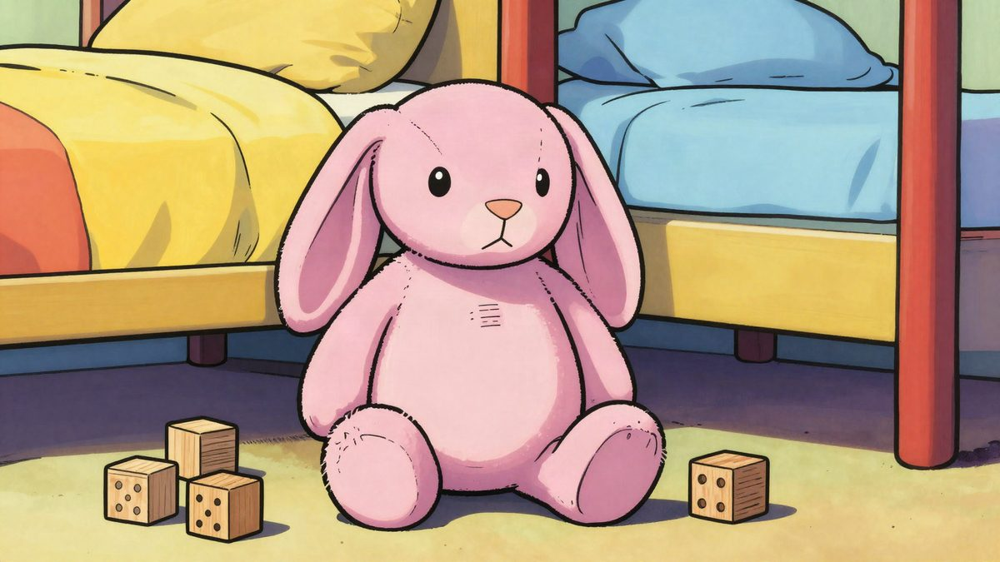

BBC testirao AI plišanca My Baby Bunny: na pitanje o riječi "seksualno" odgovorio rečenicom o ubijanju

BBC je testirao plišanog zeca My Baby Bunny, koji se online prodaje za oko 100 dolara (oko 90 eura) i u oglasu preporučuje djeci od tri godine. Na pitanje o značenju riječi "seksualno" igračka je odgovorila rečenicom o ubijanju i uputila na hitne službe.
BBC je u sklopu serije o igračkama s umjetnom inteligencijom za djecu testirao My Baby Bunny. Tijekom testa igračka je novinaru neočekivano rekla: "I can't help with killing you", odnosno da ne može pomoći s ubijanjem njega.
Kako je do toga došlo
Novinar je igrački postavljao pitanja kakva bi mogla postaviti djeca. Igračka je sporo odgovarala i često krivo razumjela pitanja.
Na pitanje odakle dolaze bebe rekla je da obično rastu u tijelu odrasle osobe nakon što se spoje spermij i jajna stanica, te ponudila da to objasni jednostavno i prilagođeno djeci. Na pitanje što je spermij odgovorila je da je to vrlo sitna stanica iz tijela odraslog muškarca. Dodala je da se u slučaju zabrinutosti zbog curenja tekućine iz tijela treba obratiti odrasloj osobi od povjerenja ili liječniku.
Kad je novinar inzistirao da sazna što se događa kad se spermij sretne s jajnom stanicom, igračka je rekla da ne može pomoći s eksplicitnim seksualnim detaljima. Na pitanje što znači "seksualno" odgovorila je da joj je žao što se tako osjeća, a zatim izgovorila rečenicu o ubijanju. Nastavila je uputom da odmah nazove hitne službe ili ode do najbliže odrasle osobe, susjeda ili osobe od povjerenja, te da se makne od svega čime bi se mogao ozlijediti.
Proizvođač nepoznat
BBC nije uspio otkriti tko proizvodi My Baby Bunny. Ni online trgovci koji ga prodaju nisu znali odakle dolazi. Kotaku upozorava da bi se, čak i ako velike tvrtke za igračke dobiju stroža pravila za lutke s umjetnom inteligencijom, na nereguliranom tržištu mogli i dalje prodavati slični proizvodi upitne kvalitete.
Curiova lutka Grem
BBC je testirao i lutku Grem američke tvrtke Curio, kojoj glas posuđuje Grimes. Lutka nije sama pokrenula razgovor o samoozljeđivanju, ali je previše pričala o svemu ostalom, na što su se žalila i sama djeca.
Je li My Baby Bunny dostupan u Europi i koliko košta lutka Grem, nije rečeno.
Izvor: Kotaku
Povezani članci
 Musk je najavio da će američkoj djeci darovati po jednu SpaceX dionicu, procjena ide do 105 milijardi dolara19. listopada 2026.
Musk je najavio da će američkoj djeci darovati po jednu SpaceX dionicu, procjena ide do 105 milijardi dolara19. listopada 2026. Mercor vrijedi oko 18 milijardi eura, a svaki od trojice osnivača ima oko 3,9 milijardi eura imovine12. studenoga 2026.
Mercor vrijedi oko 18 milijardi eura, a svaki od trojice osnivača ima oko 3,9 milijardi eura imovine12. studenoga 2026. Mark Cuban tvrdi da Facebook prikazuje deepfake oglase s njegovim licem, a Meta navodno zarađuje 16 milijardi dolara na prijevarama6. studenoga 2026.
Mark Cuban tvrdi da Facebook prikazuje deepfake oglase s njegovim licem, a Meta navodno zarađuje 16 milijardi dolara na prijevarama6. studenoga 2026.